San Diego Landscape Remodeling · Outdoor Living Club · Version 3
Our logo on every shirt
All sixteen designs now carry the full SDLR logo: the monogram with San Diego / Landscape Remodeling, so anyone who asks "what brand is that?" gets the answer right there.
Back designs get the logo on the front chest and inside the back design. Front designs get it in the design and on the back yoke.
WaitingPick the designs to produce and give refinement notes. Rounds 1 and 2 stay in the version history.
The chest logo
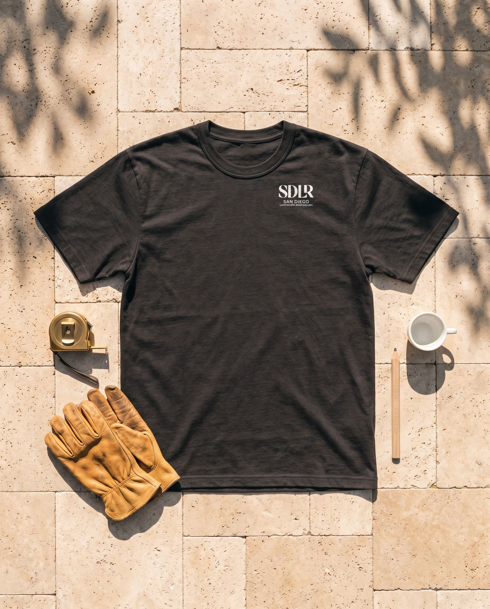
The front of Fire Pit Hours: the full SDLR logo on the left chest, 3 in wide.
All sixteen
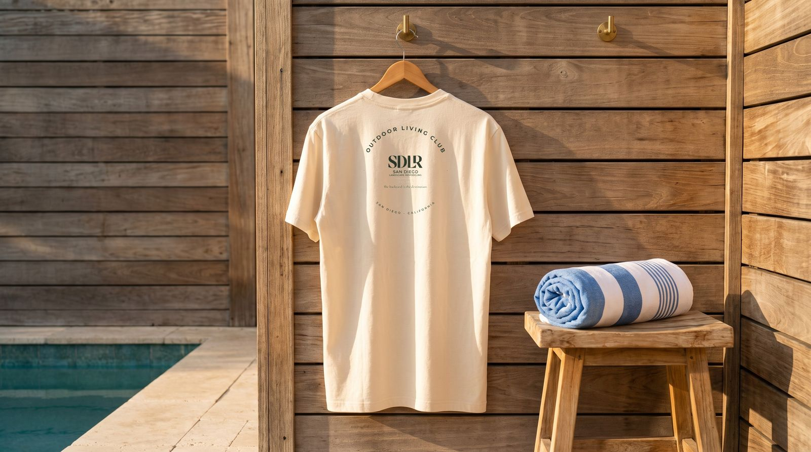
1Club Crest. Logo at the centre of the crest, logo on the chest.
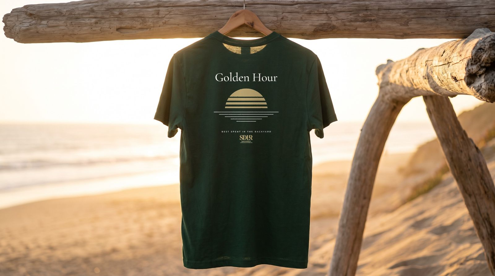
2Golden Hour. Gold logo under the sunset, logo on the chest.
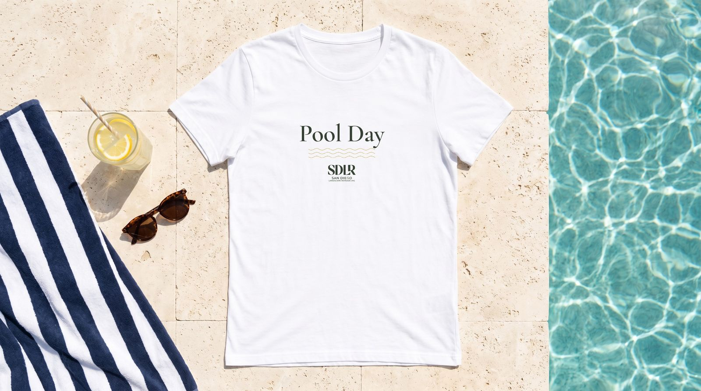
3Pool Day. Logo under the title, logo on the back yoke.
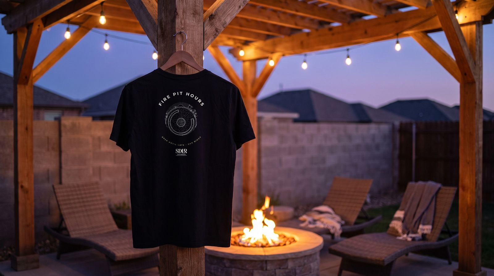
4Fire Pit Hours. Logo below the fire terrace, logo on the chest.
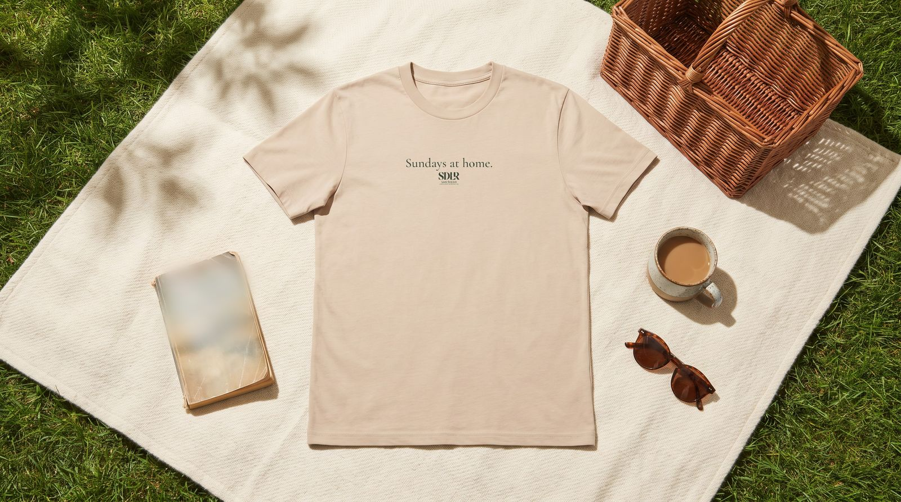
5Sundays at Home. Small logo under the line, logo on the back yoke.
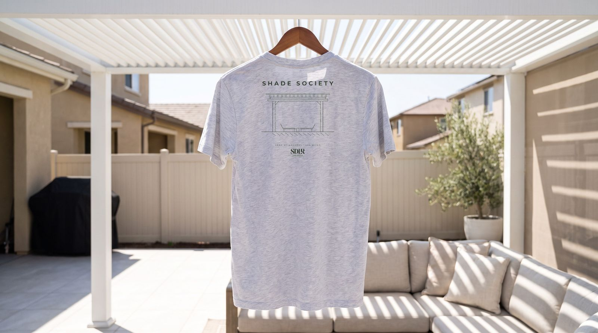
6Shade Society. Logo under the pergola, logo on the chest.
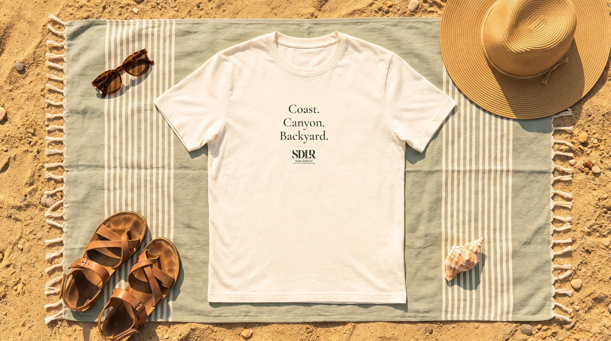
7Coast. Canyon. Backyard.. Logo under the words, logo on the back yoke.
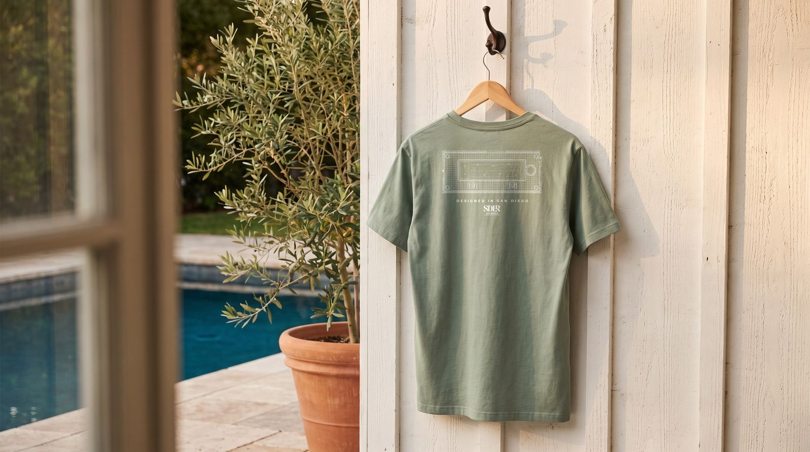
8Designed in San Diego. Logo under the plan, logo on the chest.
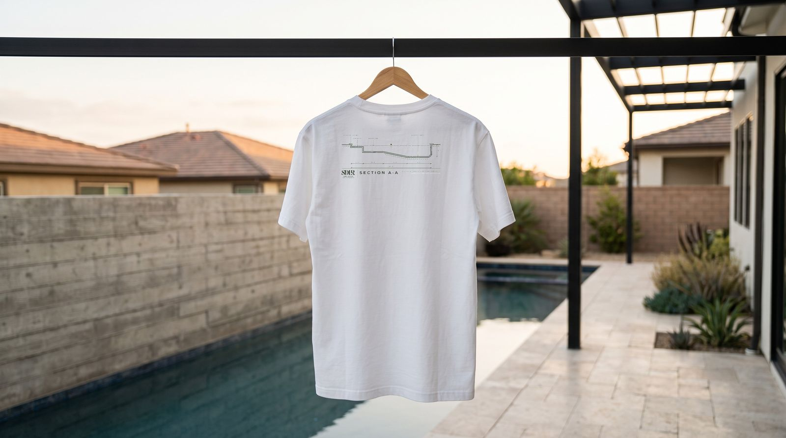
ASection A-A. Logo in the drawing title block, logo on the chest.
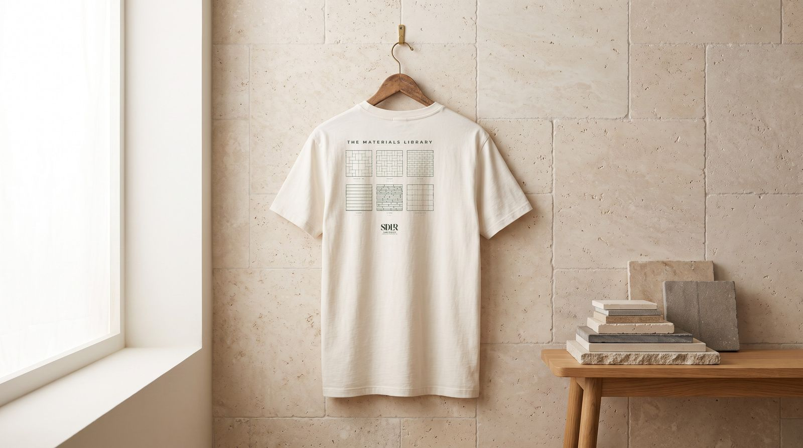
BThe Materials Library. Logo under the swatches, logo on the chest.
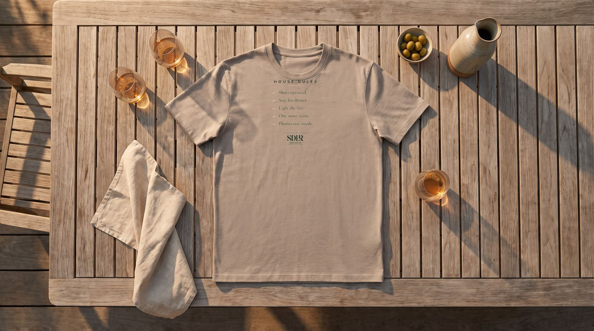
CHouse Rules. Logo under the rules, logo on the back yoke.
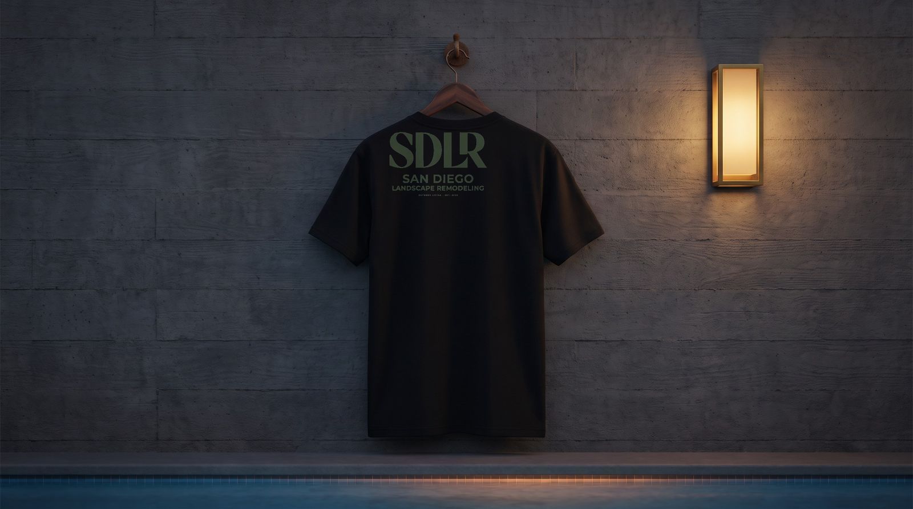
DTonal Logo. The full logo, tonal, on the back and chest.
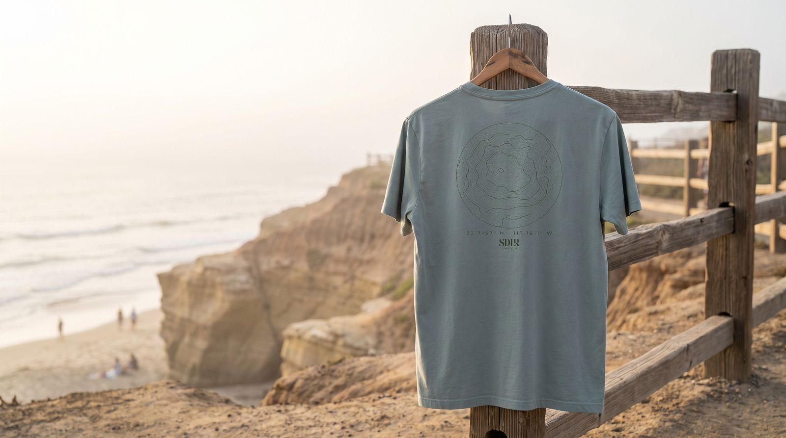
ETopography. Logo under the coordinates, logo on the chest.
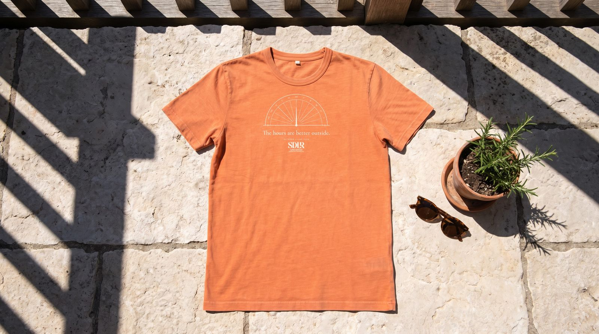
FSundial. Logo under the line, logo on the back yoke.
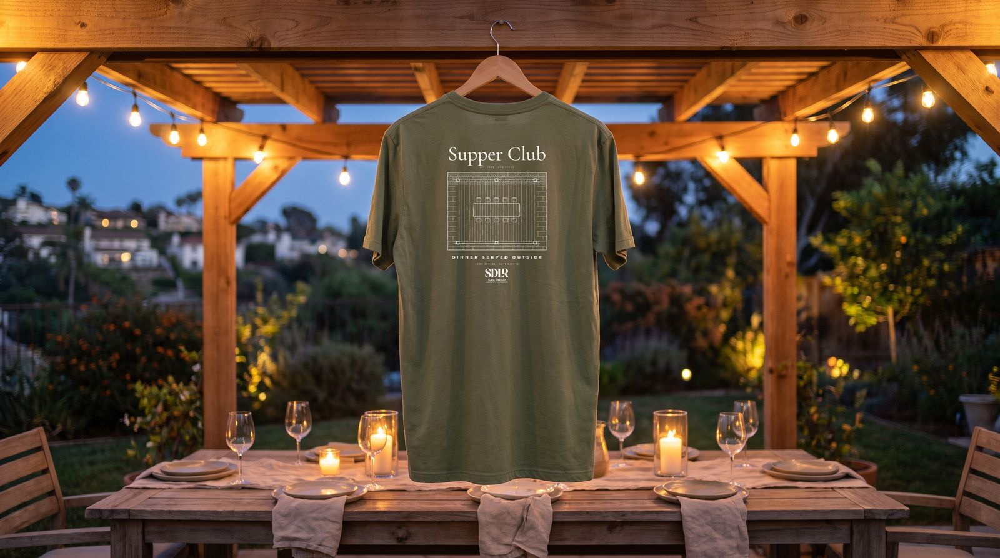
GSupper Club. Logo under the plan, logo on the chest.
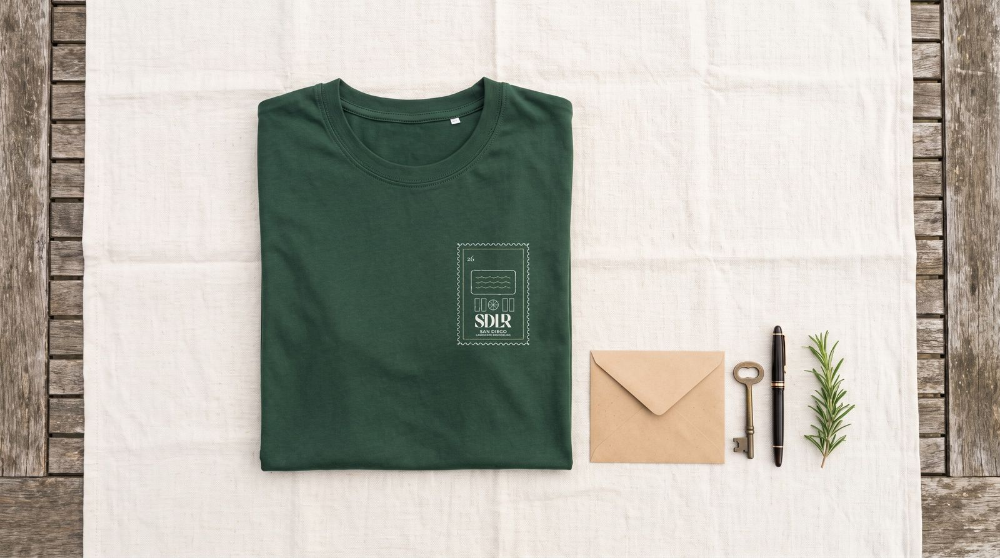
HThe Stamp. Logo inside the stamp, logo on the back yoke.
The artwork
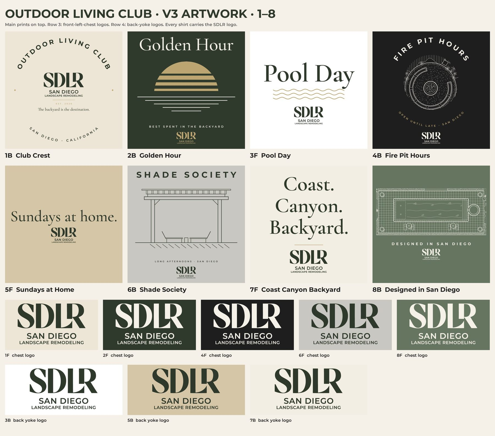
Designs 1–8. Row 3 shows the chest logos and row 4 the back-yoke logos.
The two layered Illustrator files, all mockups and the README are in Drive under 02 Clients/san-diego-landscape-remodeling/assets/print-ready/apparel/2026-11-22-lifestyle-collection-v3/.